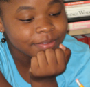

Friends of Tyler School

Website:
http://www.friendsoftylerschool.org Location:
Washington, DC
Neighbors of the John Tyler Elementary School on Capitol Hill, Washington DC, established the Friends of Tyler School (FOTS) in March of 1990. The mission and goal of FOTS is to provide educational and enrichment activities for children in inner city Washington, DC. The core program provides one-on-one tutoring with a volunteer tutor and mentor who promotes positive values and behaviors, provides emotional support, and helps the student to increase his/her academic skills, social skills, and self-confidence. After school and summer camp programs run by paid certified teachers and volunteers also help to reinforce these goals.
Supported Projects
CTC Program Building
Charlena Barnes
6/2002 — 8/2004
Goal 1: Maintain, organize and upgrade out CTC through developing an inventory system and updating our website.
Goal 2: Provide opportunities for FOTS students to use the FOTS computer center to improve typing and word processing skills and to learn to use the Internet by researching and implementing successful teaching tools for use at CTCs.
Goal 3: Implement an after-school computer literacy program
Goal 4: Train FOTS Teachers, Tutors and Parent To More effectively Use Educational Software to Enhance Student Academic Achievement
Goal 5: Develop public and private sector resources that will enable the project to continue after the Members leave.
Charlena helped to launched the new website in September 2002. It has been extremely helpful with fundraising and the recruitment of volunteers. Microsoft Access was used to create databases to track software, hardware, community and technology contacts, and student, tutor, and parent contacts. Each database has easy-to-use interfaces to update information.
Charlena created FOTS curricular resource binders based off of resources from Byte Back, SeniorNet, Triangle Coalition, Digital Newsroom, and a host of web-based programs. As a result, the FOTS curriculum is a pool of resources that can be manipulated and adapted to student need and class environment. Future VISTAS can rely on the curriculum binders and documented resources to create future classes.
Charlena assisted in keeping the computer center operated on a five-day week schedule. Basic computer literacy skills were addressed in computer classes and Open Lab. In the spring of 2003, classes concentrated on more advanced topics such as Lego robotics, Photoshop, spreadsheets, and web page design.
CTC Youth Program Building
Emily Fain
8/2003 — 8/2004
I. Maintain, organize and continue to upgrade program site
II. Implement an after-school computer literacy program for students
III. Help plan and implement a summer six-week academic day camp: Camp Cool
IV. Train FOTS Teachers, Tutors and Parents To More effectively Use CTC Educational Software
V. Train parents of FOTS students and other adult family members
VI. Develop public and private sector resources that will enable the project to continue after the Members leave.
VII. Manage donations to and from FOTS and other organizations
Thirteen computers donated last summer and fall are to be used to replace older equipment. As of early March, eight new computers had been placed in the CTC and work was almost completed on setting them up for class use. The remaining five will replace older computers in the secondary labs; this work will begin when the CTC work is completed. Work has begun on 10 computers in the new FOTS building. Five of the Win98 computers from the CTC replaced older computers in the secondary lab on the ground floor, which is used as a homework center after school.
The VISTA helped the Program Director develop a schedule of after-school classes for the first and second semesters of this school year. Software was widely used in teaching academic classes
Open Lab was available every afternoon during the first semester and was supervised by the VISTA. There were no Open Lab activities offered. A few students used this time to complete their homework assignments.
A volunteer continued her third year of teaching Lego Robotics. The fall group prepared for and competed in the Virginia Lego Robotics competition in November.
Training/orientation of tutors to FOTS educational software has been postponed. Tutors will be encouraged to use this system to check out software and use programs to supplement their tutoring sessions.
A large TV monitor was placed in a small classroom with a computer and is currently being used by one teacher to help teach her class using a software program.
New grant possibilities identified by CTCnet were sent to the FOTS fundraisers, Kelly Williams and Ann Womeldorf to research in further detail.
Elementary School Computer Training Development
Nathan Kubiszewski
11/2001 — 11/2002
Goal 1: Maintain, organize and upgrade computer center site
Goal 2: Provide opportunities for FOTS students to use the FOTS computer center to improve typing and word processing skills and to learn to use the Internet.
Goal 3: Implement an after-school computer literacy program
Goal 4: Train FOTS Teachers, Tutors and Parent To More effectively Use Educational Software to Enhance Student Academic Achievement
Goal 5: Train parents of FOTS students and other adult family members
Goal 6: Develop public and private sector resources that will enable the project to continue after the Members leave.
Goal 1: Community volunteers have taught the Americorps VISTA Volunteers enough basic computer maintenance and troubleshooting techniques to sustain the computer lab. A Technical Committee of five community volunteers was formed to help troubleshoot technical problems too large or difficult for the VISTA to fix.
Microsoft Access has been used to create databases to track software, hardware, community and technology contacts, and student, tutor, and parent contacts. Each database has easy-to-use interfaces to update information. Equipment evaluation sheets are cataloged for all incoming and outgoing donations.
A Web Committee was created to re-develop the FOTS website, and contains two volunteer web-professionals. The new website http://www.friendsoftylerschool.org was launched in September 2002. Easy to use templates were created so that future VISTAS and volunteers can easily update the web content and sustain the site.
Goal 2: Open Lab has fostered a lot of insightful learning due to the one-on-one attention students receive from the VISTA and volunteers. In addition to Open Lab, three computer courses have been successfully established. Nine students are currently enrolled in other after-school and evening computer classes. Curricular resources for the computer classes have been identified and cataloged in curriculum binders. Additional classes and projects are being developed for the spring and summer sessions.
Student files were created to track an initial general assessment to measure computer skills, keyboard efficiency, and technology interests. General program assessments occur quarterly.
Goal 3: The computer center has been operating on a five-day week schedule. Basic computer literacy skills are being addressed in current computer classes and Open Lab. Additional classes and projects are being developed by the VISTA in cooperation with community volunteers.
The summer program, Cool Camp, is currently being developed. Software, websites, and volunteer teachers are being identified.
Goal 4: A second lab has been established and maintained for tutors to use during tutoring and mentoring. A software database and computer procedures have been created and posted near computers. An introductory computer workshop was given to tutors, which covered the Digital Divide Initiative and computer center procedures.
In cooperation with Digital Sisters, seven parents attended a workshop on how to effectively use technology as an educational tool for young girls and teenagers. Shireen Mitchell, Director of Digital Sisters, presented this workshop.
Goal 5: Assessment of parents was done over the phone and included getting an idea of technology interests and availability. Based on initial conversation and meetings, a survey has been completed and will be distributed during future workshops.
Saturday Parent Workshops have been developed for selected weekends through April. Each workshop is built around a particular topic that can be covered during one workshop.
Goal 6: Sources have been identified and utilized for receiving equipment donations. A Verizon grant was awarded for the CTC.
Numerous computer programs, resources, and websites have been identified and catalogued in the computer office for future reference.
Many of the volunteers working with the FOTS Computer Center have been found through www.volunteermatch.org. For example, two volunteers were found for the Technical and Web Committee, and an additional volunteer was recruited as a lab helper.
Digital Sisters, a technology program that promotes technology among women and gender issues, has agreed to help FOTS conduct both parent and youth workshops. This partnership increases the capacity of FOTS by offering technology training that addresses relevant differences and opportunities between genders.
CTC Implementation and Support
Benedict Tisa
6/2001 — 6/2002
The AmeriCorps*VISTA member will be responsible for the development of a FOTS community technology center to increase our capacity to help students, their families and other community adults to bridge the “digital divide.” In addition, the VISTA member and the new FOTS CTC will help FOTS to expand its capacity to implement its tutoring program and after-school classes that support the academic growth of our students.
- Assume responsibility as director of a small CTC
- Develop a digital and educational program
- Identify successful teaching tools at experienced CTCs and modify as needed to meet the needs of FOTS students
- Assist FOTS tutors, staff, students and adult family members to develop basic computer skills, including typing and word processing skills
Related Content
None created yet!